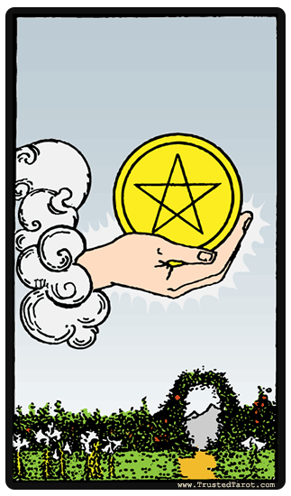
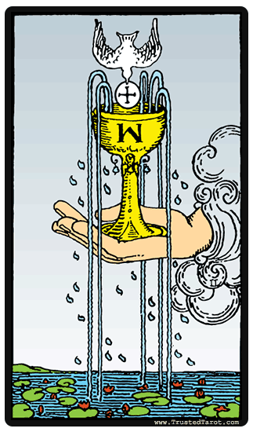
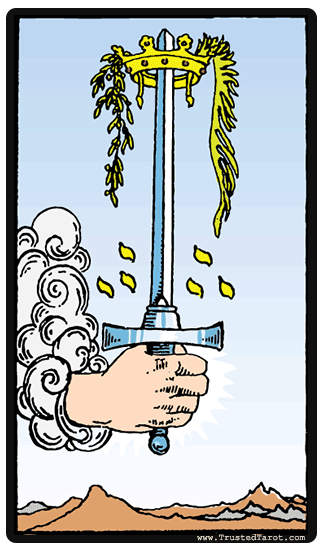
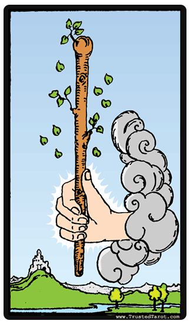

Desarrollo del juego
Habrá un máximo de 6 jugadores que se establecerán antes de empezar la partida.
Podrán jugar tanto jugadores humanos como jugadores «máquina»
Se establecerá una baraja de entre las posibles para jugar.
Cada jugador tiene un perfil de riesgo del tipo:
- «atrevido» que se cuantifica como 50
- «normal» que se cuantifica como 40
- «prudente» que se cuantifica como 30
El perfil de un jugador definirá qué cantidad de puntos apuesta en función de los que le
quedan, y también lo que arriesgará a la hora de pedir una nueva carta.
Se reparten 1 carta del mazo a cada jugador para establecer prioridades. El jugador que
consiga la carta más alta es el que tiene mayor prioridad. En caso de que 2 o más jugadores
saquen la carta más alta, la prioridad es:
1. Oros

2. Copas

3. Espadas

4. Bastos

En caso de jugar una baraja de póker, por ejemplo, la prioridad de las cartas se establecen
según los equivalentes a oros, copas, espadas, bastos.
El jugador con mayor prioridad será la banca, y los turnos irán en función de la prioridad,
primero el jugador con menor prioridad, luego el siguiente con menor prioridad, y por
último la banca.
Cada jugador inicia la partida con 20 puntos.
Habrá un máximo de 30 rondas.
Antes de repartirse ninguna carta, se establecen las apuestas para cada ronda,cada jugador
apuesta según su perfil. Hay que tener en cuenta que un jugador nunca apostará más
puntos de los que tiene la banca, dado que sería incoherente.
Por turnos, según prioridad, cada jugador en cada ronda:
- Al iniciar la ronda se le ha repartido una carta.
- Seguidamente, debe decidir si desea recibir más cartas del mazo
- Si no lo desea, debe indicarlo diciendo que se planta.
-
Si por el contrario, desea cartas para intentar acercarse lo más posible a
sumar siete y medio, podrá pedir todas las que quiera de una en una,
pudiéndose plantar cuando quiera.
- El último jugador en cada ronda es la banca.
Reglas para repartir los puntos apostados
La banca juega contra todos y cada uno de los jugadores, y, por lo tanto, si ella se ha
pasado, deberá pagar su apuesta a todos aquellos jugadores que se hubieran
plantado sin pasarse.
-
Si la banca se ha plantado, comprueba con cada jugador su jugada para ver a quién
vence y con quién pierde. En cada apuesta vence quien más se acerque a siete y medio.
-
En caso de empate gana la banca; por lo tanto, si la banca tiene siete y medio, gana
automáticamente a todos los jugadores.
-
La banca debe pagar la cantidad apostada, a cada jugador con el que pierda, y a la
inversa, cada jugador que pierda con la banca debe pagarle a esta lo apostado.
-
Si un jugador tiene siete y medio (y la banca no) cobra el doble de lo apostado y
además toma pasa a ser candidato a banca la ronda siguiente.
-
En caso de que haya más de un jugador con siete y medio, y la banca NO, el jugador
con más prioridad de entre los que tienen siete y medio pasará a ser la banca.
-
El jugador que pierde sus puntos queda eliminado de la partida.
-
Si la banca queda eliminada y ningún jugador tiene siete y medio, el jugador con más
prioridad pasará a ser la banca.
-
Si la banca ha de pagar a varios jugadores, pero no tiene suficientes puntos para
pagar a todos, irá realizando los pagos que pueda según la prioridad de los
jugadores. Es decir:
-
Primero paga al jugador con más prioridad, luego al segundo, y así
sucesivamente mientras tenga puntos para pagar. Es posible que el último
jugador al que tenga que pagar no reciba los puntos que debería (la banca
no tiene más puntos).
-
Si la banca se queda sin puntos, quedará eliminada y se elegirá una nueva banca:
-
o bien entre los jugadores que tengan 7.5, si hay alguno,
-
o bien entre todos si no hay ningún jugador con 7.5, siempre en
función de la prioridad de los jugadores.
-
La partida continúa hasta que:
-
un único jugador se hace con todos los puntos en juego, quedando los demás
eliminados
-
o bien hasta que se disputa el máximo de manos fijadas para la partida, que
puede ser hasta un máximo de 30, en cuyo caso el vencedor es quien
acumula mayor cantidad de puntos al final de la partida.
-
La cantidad de puntos a apostar, salvo en el caso de un jugador humano, que podrá
establecer la apuesta manualmente, se realizará en función del perfil de jugador.
Lógica de pedir cartas
Cuando un jugador decide pedir una carta, lo hará en función de las cartas que hay
repartidas, y lo hará calculando la probabilidad de pasarse si recibiese una nueva carta:
-
Si un jugador tiene por ejemplo un cinco, calculará todas las posibles cartas que
supongan pasarse de 7 y medio, así como el número total de cartas que quedan por
salir.
-
La división entre el número de cartas que supongan pasarse de 7 y medio y el
número de cartas que quedan por salir multiplicado por 100 nos da la probabilidad
de pasarnos de 7 y medio. Si quedan 10 cartas que suponen pasarnos de 7 y medio y
un total de 20 cartas por salir, esta probabilidad sería (10/20)*100 = 50%.
Si esta probabilidad supera el perfil de riesgo del jugador (prudente–30, normal–40,
arriesgado-50) se plantará. Salvo en el caso de:
-
un humano que juegue manualmente
-
la banca, que está obligada a pedir cartas si ve que puede quedar eliminada o no
gana a ningún jugador.
La banca sigue el siguiente criterio:
-
Si ya tiene 7.5 no pedirá más cartas.
-
Si ya se ha pasado, no pedirá cartas.
-
Si no tiene 7.5, pero después de repartir puntos se quedase sin puntos, pedirá carta.
-
Si ya gana a todos los jugadores, no pedirá carta.
-
Si no supera a ningún jugador, pedirá carta.
-
Si ya supera a algún jugador, y con esta situación no se queda sin puntos,
pedirá carta según su perfil de riesgo.